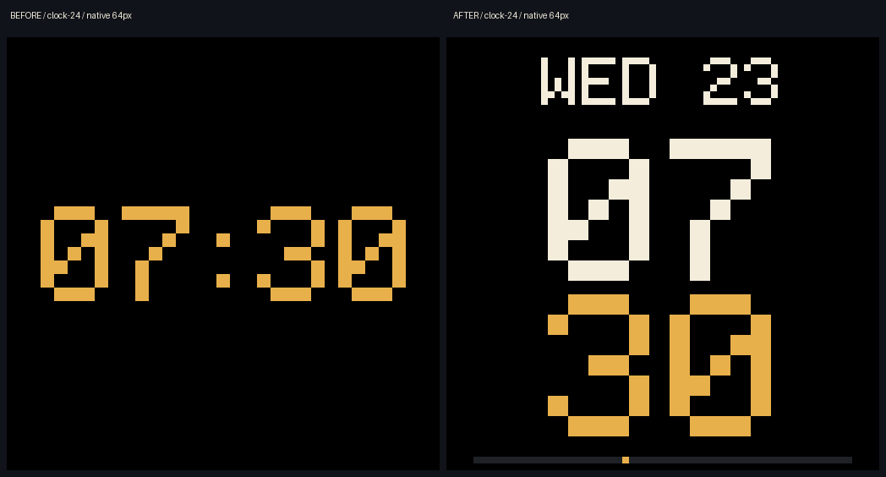
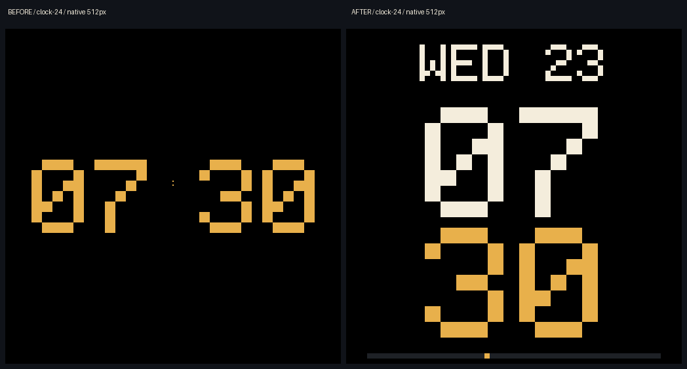
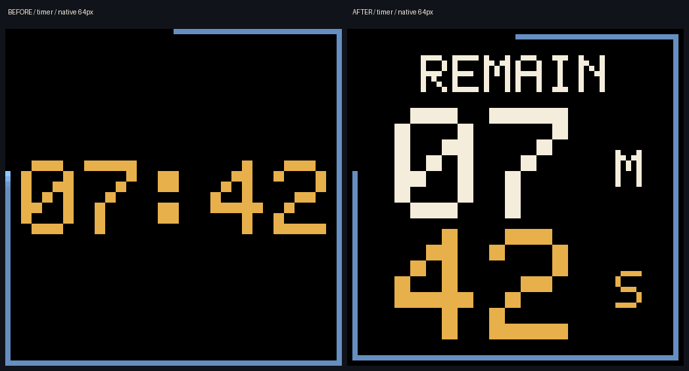
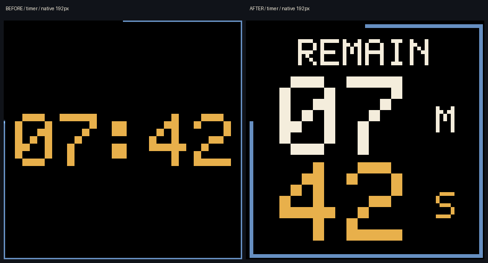
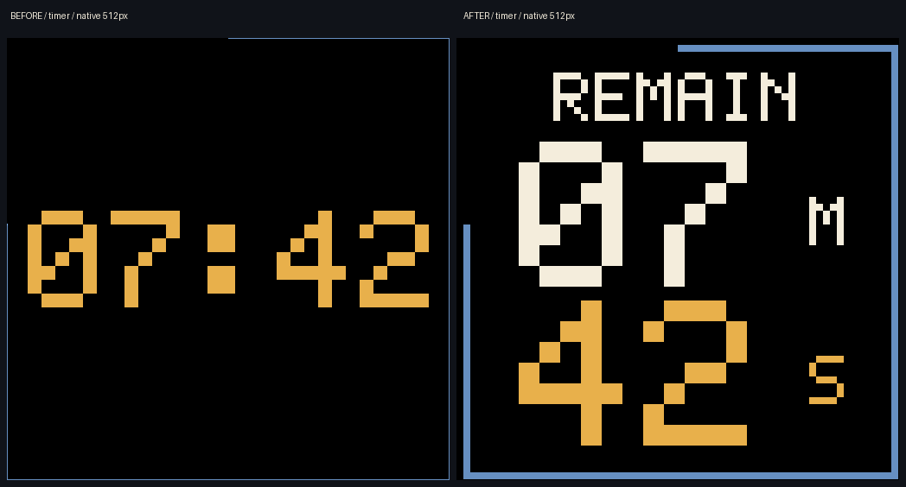
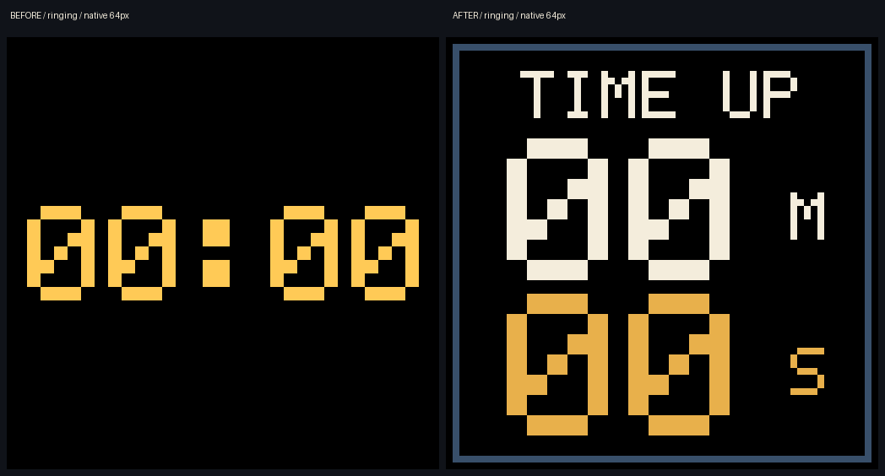

Tessera · Pass 06TESSERA / PASS 06 / R01–R05Time, in light.
Clock, Timer and Alarm share one workspace. Sun, Sleep and Wake show their light plans and the wall’s actual state. These are native app captures; controls remain outside the wall artwork.
PRODUCTION RGBClock on the wall
64 × 64 pixels

192 × 192 pixels
512 × 512 pixels

Countdown on the wall
64 × 64 pixels

192 × 192 pixels

512 × 512 pixels

Time is up on the wall
64 × 64 pixels

192 × 192 pixels
512 × 512 pixels